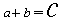
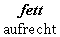
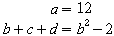

| [zurück] | [Hauptmenü] | [weiter] |
OpenOffice.org Formel
08 - Formatierung
Zusätzlich zu den einzelnen Arten und
Methoden eine Formel darzustellen kommen noch Formatierungsoptionen
hinzu. Dazu gehören vor allem Ausrichtung und
Textgröße.
| Kommando-Eingabefeld | Formel |
|---|
- Größe:
der Befehl
sizegefolgt von einer Größenangabe:
size -2 {a+b} = size +10 {c} |

|
- Farbe:
Befehl
colorgefolgt von der Farbe
color blue a |
- Schnitt:
verschiedene Optionen um die Form des Textes zu ändern
bold {fett} newline
"aufrecht" |

|
Ausrichtung:
alignlfür links-ausrichten
alignrfür rechts-ausrichten
stack{ alignr a ={} # alignr b+c+d
={}} |

|
Möchten Sie die Formel in einer Textzeile (einem Textdokument) haben, können Sie auch die Menüoption: Format>Textmodus verwenden. Dann werden Formeln wenn möglich weniger hoch dargestellt.
| [zurück] | [Hauptmenü] | [weiter] |
© Copyright 2003, Harald Schilly
This documentation is part of "Erste Schritte: OpenOffice.org Textdokument", which is released
under the terms of the PDL.
For full copyright and license info read the index page.